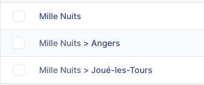
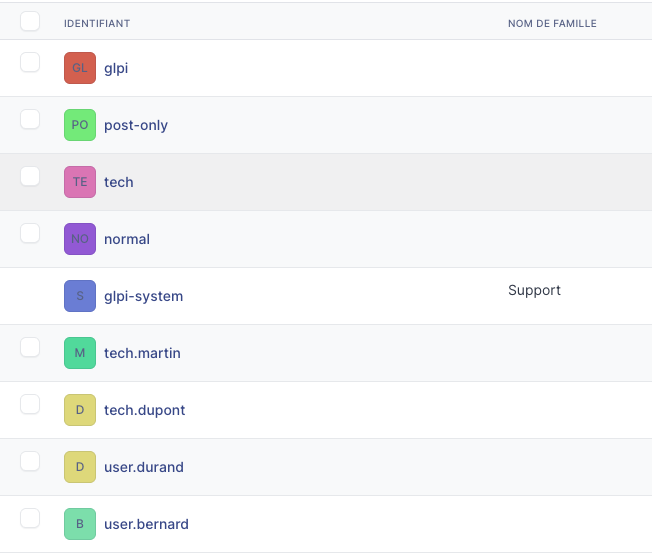
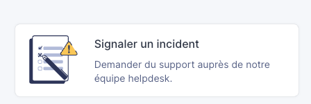
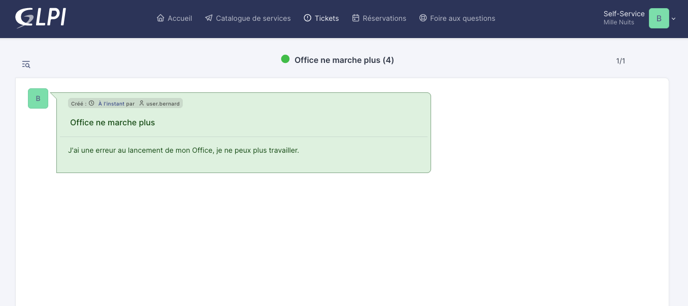
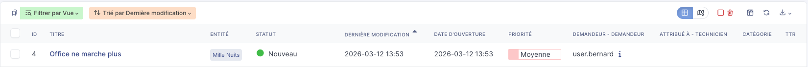
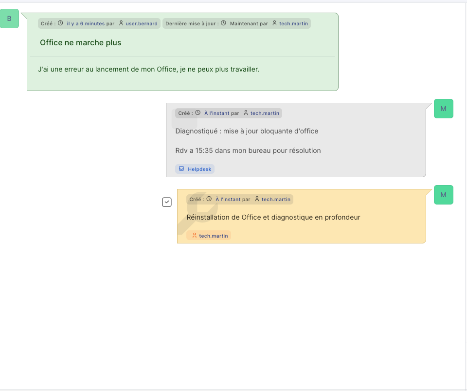
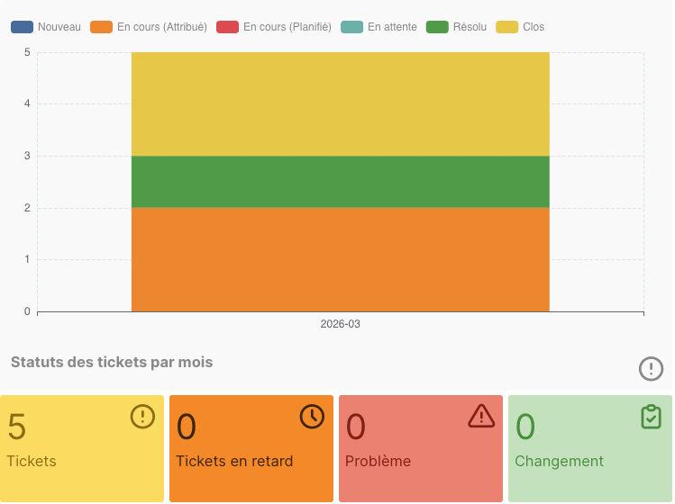
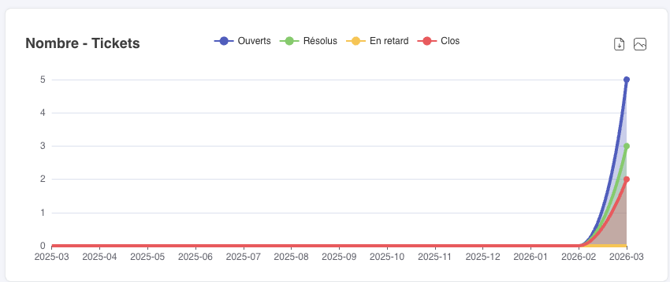

Mission 4 - Mise en place d'un outil de gestion d'incidents (GLPI)
👤 Fiche rédigée par : GADONNAUD Ewen
🎓 Formation : BTS SIO 1ère année - Option SISR
🏫 Établissement : Lycée Paul-Louis Courier, Tours
📅 Date : Mars 2026
Ce guide couvre la configuration de GLPI en tant qu'outil de gestion d'incidents pour l'entreprise Mille Nuits. L'installation du serveur a été réalisée en suivant la procédure rédigée par ma binôme Bidanessy Coumba lors de la situation professionnelle précédente.
Prérequis
- Serveur MN06 sous Debian avec GLPI installé et accessible via
http://support.millenuits.fr - Compte
glpi(Super-Admin) disponible pour la configuration initiale
1. Configuration des entités
Les entités permettent de structurer l'organisation dans GLPI. Elles représentent ici les différents sites géographiques de Mille Nuits.
Aller dans Administration > Entités, puis créer les entités enfants suivantes sous l'entité racine Mille Nuits :
| Entité enfant | Description |
|---|---|
| Angers | Site d'Angers |
| Joué-les-Tours | Site de Joué-les-Tours |

2. Profils utilisés
GLPI propose des profils par défaut. Les profils suivants ont été retenus sans modification :
| Profil | Rôle dans Mille Nuits |
|---|---|
| Super-Admin | DSI — accès total, consultation des statistiques |
| Technician | Techniciens informatiques — gestion des tickets |
| Self-Service | Salariés — ouverture et suivi de leurs propres tickets |
2. Création des utilisateurs
Les utilisateurs ont été créés depuis Administration > Utilisateurs > Ajouter.
| Identifiant | Profil assigné | Rôle |
|---|---|---|
user.durand |
Self-Service | Salarié |
user.bernard |
Self-Service | Salarié |
tech.martin |
Technician | Technicien informatique |
tech.dupont |
Technician | Technicien informatique |
glpi |
Super-Admin | DSI (compte conservé pour le contexte du labo) |

Le compte
glpiest le compte administrateur par défaut de GLPI. Il est conservé ici pour représenter le DSI dans le cadre du labo.
3. Workflow de gestion des incidents
Le cycle de vie d'un ticket suit les étapes suivantes :
3.1 Ouverture d'un ticket (salarié)
- Se connecter avec un compte
Self-Service(ex:user.durand) - Aller dans Assistance > Créer un ticket
- Renseigner le titre, la description et l'urgence
- Valider — le ticket apparaît avec le statut Nouveau


3.2 Prise en charge par un technicien
- Se connecter avec un compte technicien (ex:
tech.martin) - Aller dans Assistance > Tickets
- Ouvrir le ticket concerné
- Dans la section Acteurs, s'attribuer le ticket en tant que Technicien assigné
- Le statut passe automatiquement à En cours (Attribué)

3.3 Traitement et documentation de la résolution
Durant la prise en charge, le technicien documente les étapes via :
- Répondre — pour ajouter des suivis/commentaires visibles par le demandeur
- Ajouter une tâche (flèche à côté de "Répondre") — pour décrire les actions techniques réalisées avec le temps passé

Exemple de suivi sur un ticket "Souris HS bureau 12" :
Suivi 1 : Diagnostic effectué, souris défaillante confirmée.
Tâche : Remplacement de la souris — 15 min — Statut : Fait
Suivi 2 : Souris remplacée, problème résolu.
3.4 Clôture du ticket
- Dans le ticket, modifier le champ Statut à droite → Résolu
- Cliquer sur Sauvegarder
3.5 Vérification par le DSI
- Se connecter avec le compte
glpi(Super-Admin) - Consulter les tickets depuis Assistance > Tickets
- Accéder aux statistiques depuis Assistance > Statistiques pour visualiser :
- Nombre de tickets en cours / résolus
- Temps de résolution moyen
- Répartition par technicien ou par entité


Récapitulatif
| Étape | Acteur | Statut résultant |
|---|---|---|
| Ouverture du ticket | Salarié (Self-Service) | Nouveau |
| Attribution au technicien | Technicien | En cours (Attribué) |
| Traitement + documentation | Technicien | En cours (En cours) |
| Clôture | Technicien | Résolu |
| Vérification / statistiques | DSI (Super-Admin) | — |